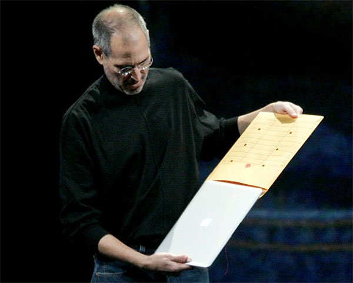

En 1976, en el garaje de la familia Jobs en Los Altos, California, donde nació lo que sería una de las marcas más vendidas y adoradas en el mundo entero: Apple Computer Company. Fundada por Steve Jobs y Steve Wozniack, esta empresa pronto pasó de ser un incipiente negocio de amigos a una empresa millonaria con cotización en la bolsa de valores, gracias al desarrollo de la computadora personal. La Apple I y Apple II fueron sus creaciones maestras y en 1982, Steve Jobs era considerado el millonario más joven de los Estados Unidos. En 1984 Apple lanzó la Machintosh, una computadora con interfaz gráfica del usuario y ratón en lugar de comandos para realizar funciones sobre las ventanas, algo completamente innovador para su época. Sin embargo, Jobs dejó la empresa que fundó en 1985 luego de serios problemas personales con el entonces presidente John Sculley.
Credits:
Lucía María López-Rey - Cristina Esquej Puente